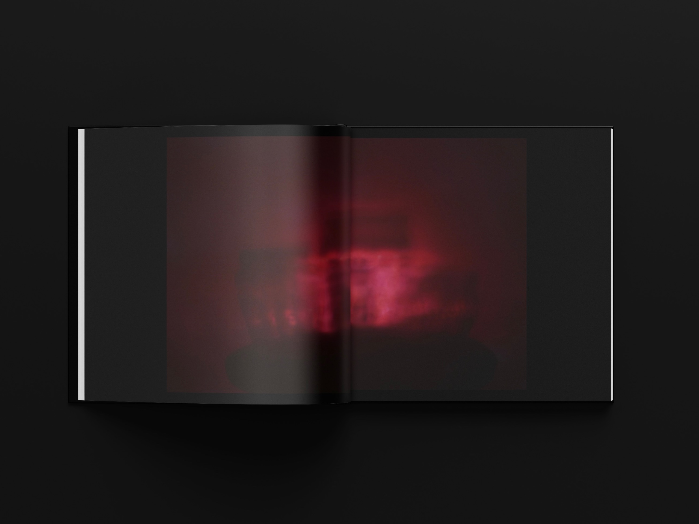
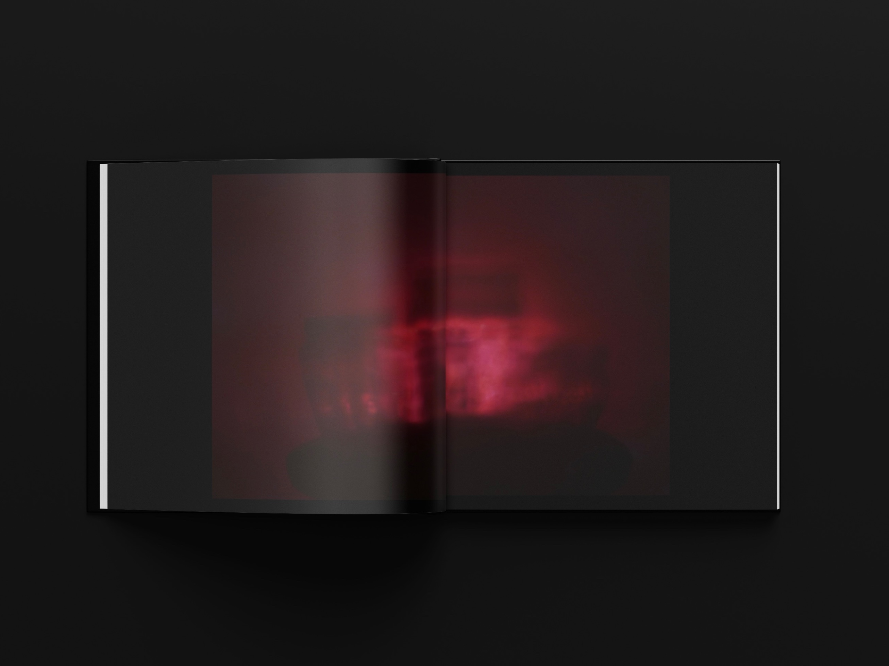

Halo
Ce projet explore la poésie des reflets lumineux à travers des bocaux en verre, en jouant sur les formes, la transparence et la répartition de la lumière.
Les bocaux, objets simples et quotidiens, deviennent ici des prismes révélateurs, transformant l’ordinaire en source de fascination visuelle, créant une ambiance appaisante.
La lumière qui s'y réfracte et s'y diffracte crée des motifs imprévisibles, des jeux d’ombres et des éclats colorés qui capturent un instant de pure beauté
L’objectif de cette série est de souligner la magie de l’éphémère et la beauté cachée dans des éléments banals.
Mai 2024
Volume - photographie
 
